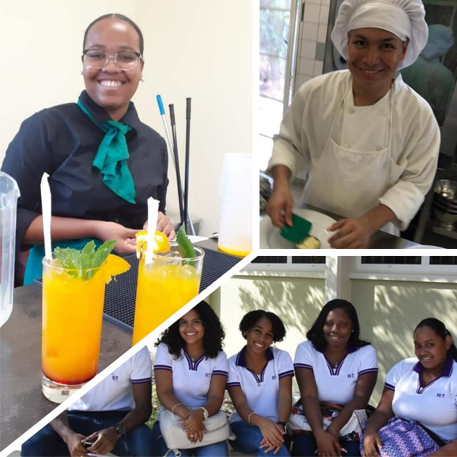
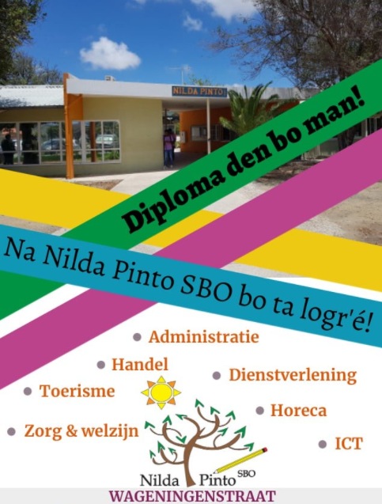
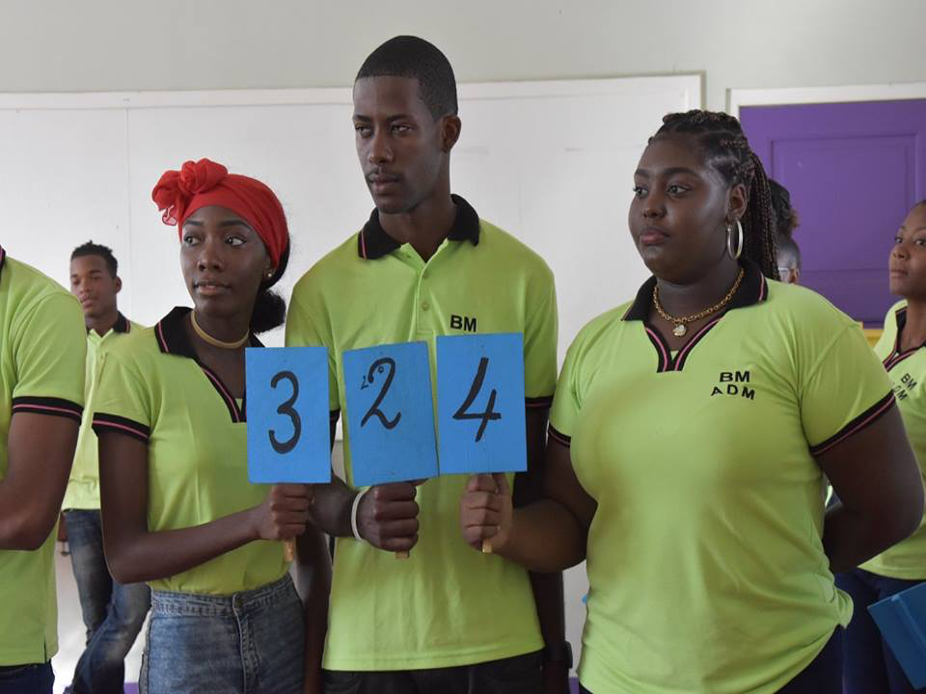

Adres hoofdgebouw
Wageningenstraat z/n
Telefoon
+5999 - 461 - 18 38
decanaat.nildapinto@gmail.com
Nilda Pinto SBO
De school voor verschillende niveaus.
Beste ouder(s)/verzorger(s) en potentiële studenten, Nilda Pinto SBO voelt zich zeer verantwoordelijk voor de toekomst van ons land Curaçao en heeft als doel onze studenten voor te bereiden op de toekomst. Daarom bieden we op het Nilda Pinto SBO een groot scala aan opleidingen op het gebied van Techniek, Economie en Zorg & Welzijn.
Wij leiden onze studenten op om in de toekomst zo zelfstandig mogelijk te kunnen functioneren. Alleen op die manier kunnen we de maatschappij verzekeren van werknemers die als goede burgers in de maatschappij kunnen participeren und functioneren. We zoeken als school toenadering tot het bedrijfsleven om de maatschappelijke ontwikkelingen te kunnen volgen en ons onderwijs goed aan te kunnen passen.



Onze studenten lopen stage in bijna alle sectoren van de maatschappij. Wij bieden zorg op maat aan studenten die op de een of andere manier belemmerd worden in hun studie. De studenten kunnen altijd terecht bij ons zorgteam.
Wij willen graag jouw keuze zijn om je te helpen om jouw toekomst op te bouwen. Je bent welkom!
Namens team Nilda Pinto SBO,
mw. G. Hooi-Scherptong (Directrice)
Verder vind je in deze brochure alle studierichtingen terug met hun bijbehorende opleidingen.
Ook wordt alle informatie over de inhoud van de opleiding, toelatingseisen, stage (beroepspraktijkvorming) ect. gegeven.
Als enige SBO-dagopleiding van het Openbaar Schoolbestuur verzorgt Nilda Pinto SBO onderwijs aan ruim 1200 studenten.
Wageningenstraat z/n
+5999 - 461 - 18 38
decanaat.nildapinto@gmail.com
Nilda Pinto SBO